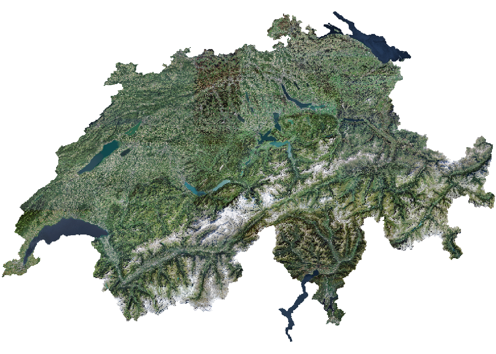
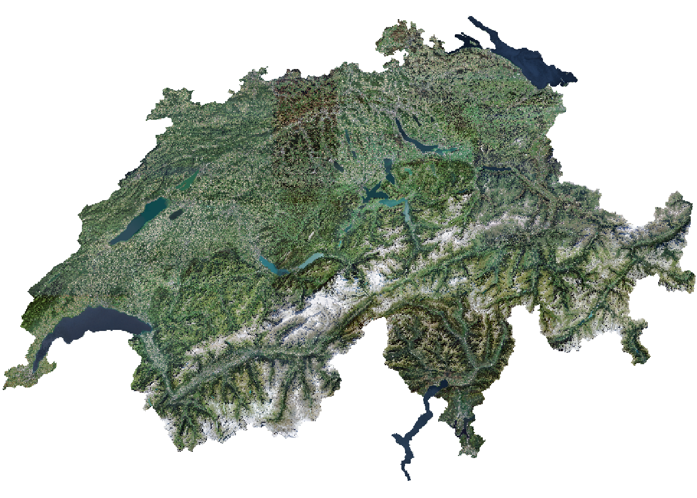
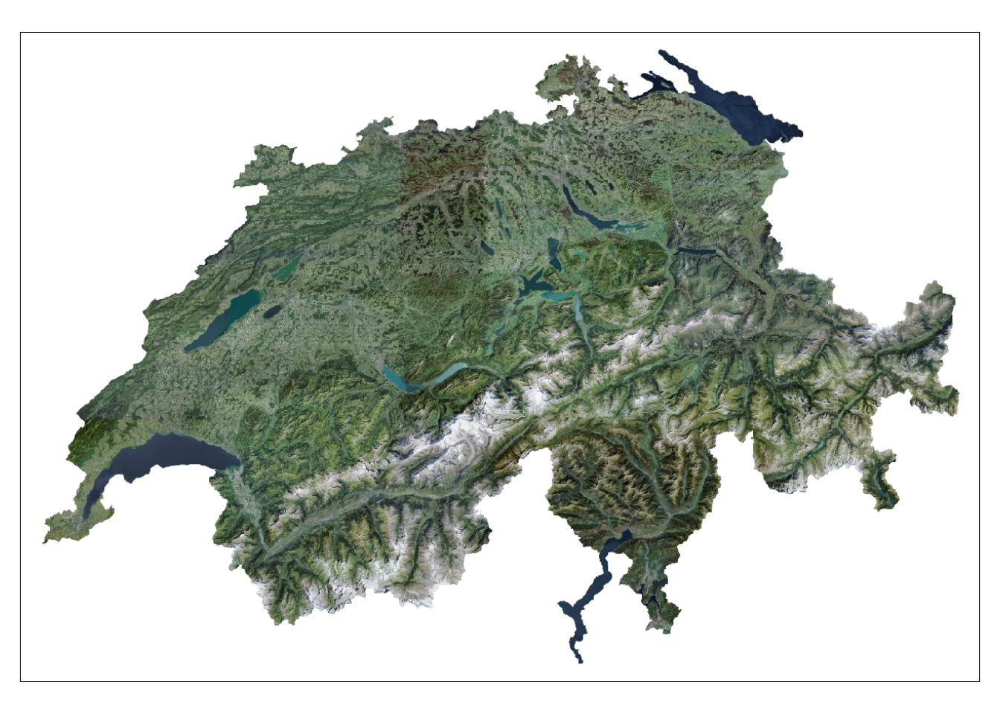

plot(swissimage)
Komplexe Rasterdaten

swissimage 10 von Swisstopo herunter: https://www.swisstopo.admin.ch/de/geodata/images/ortho/swissimage10.html
Uebung_4.Rsf, tmap und terra.plot() anplot(swissimage)
swissimageclass : SpatRaster
dimensions : 9480, 14000, 3 (nrow, ncol, nlyr)
resolution : 25, 25 (x, y)
extent : 2484375, 2834375, 1062000, 1299000 (xmin, xmax, ymin, ymax)
coord. ref. : CH1903+ / LV95 (EPSG:2056)
source : SI25-2012-2013-2014.tif
colors RGB : 1, 2, 3
names : SI25-2012-2013-2014_1, SI25-2012-2013-2014_2, SI25-2012-2013-2014_3 tmaprgb Datensatz mit tmap zu plotten, verwenden wir nicht mehr tm_raster() sondern tm_rgbtmap_mode("plot")tmap mode set to plottingswissimage_10 <- aggregate(swissimage, fact = 10)tm_shape(swissimage_10) +
tm_rgb()stars object downsampled to 1215 by 823 cells. See tm_shape manual (argument raster.downsample)
dhm200 importiertdhm25 mit 25m Auflösung herunter (https://www.swisstopo.admin.ch/de/geodata/height/dhm25.html)filename = den Output direkt in ein File speichernprogress = TRUE den Fortschritt anzeigen lassentmapSuche dir auf den gängigen Portalen (s.u.) einen spannenden Datensatz und visualisiere diesen